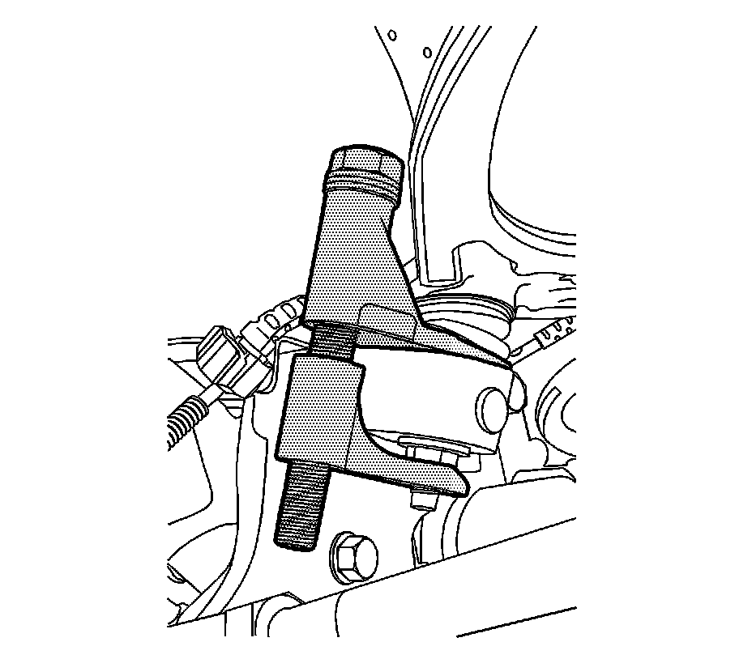

Upper Control Arm Replacement (2500 Series)
Upper Control Arm Replacement (2500 Series)
Tools Required
J-42188-B Ball Joint Separator
Removal Procedure
1. Raise and support the vehicle. Refer to Lifting and Jacking the Vehicle.
2. Remove the tire and wheel.
3. Remove the retaining bolt for the brake hose and the wheel speed sensor brackets.
4. Remove the nut at the upper ball joint. Discard the nut.

5. Disconnect the upper control arm from the steering knuckle using the J-42188-B.
6. Remove the upper control arm nuts and the adjustment cams.
7. Remove the upper control arm.
Installation Procedure
1. Install the upper control arm.
Notice: Refer to Fastener Notice.
2. Install the upper control arm bolts.
Tighten the nuts to 190 N.m (140 lb ft).
3. Connect the upper control arm to the steering knuckle.
4. Install the new nut to the upper ball joint stud.
Tighten the nut to 50 N.m (39 lb ft).
5. Install the retaining bolts for the brake hose and wheel speed sensor brackets.
Tighten the bolts to 9 N.m (80 lb in).
6. Install the tire and wheel.
7. Lower the vehicle.
8. Verify the wheel alignment. Refer to Wheel Alignment Specifications.